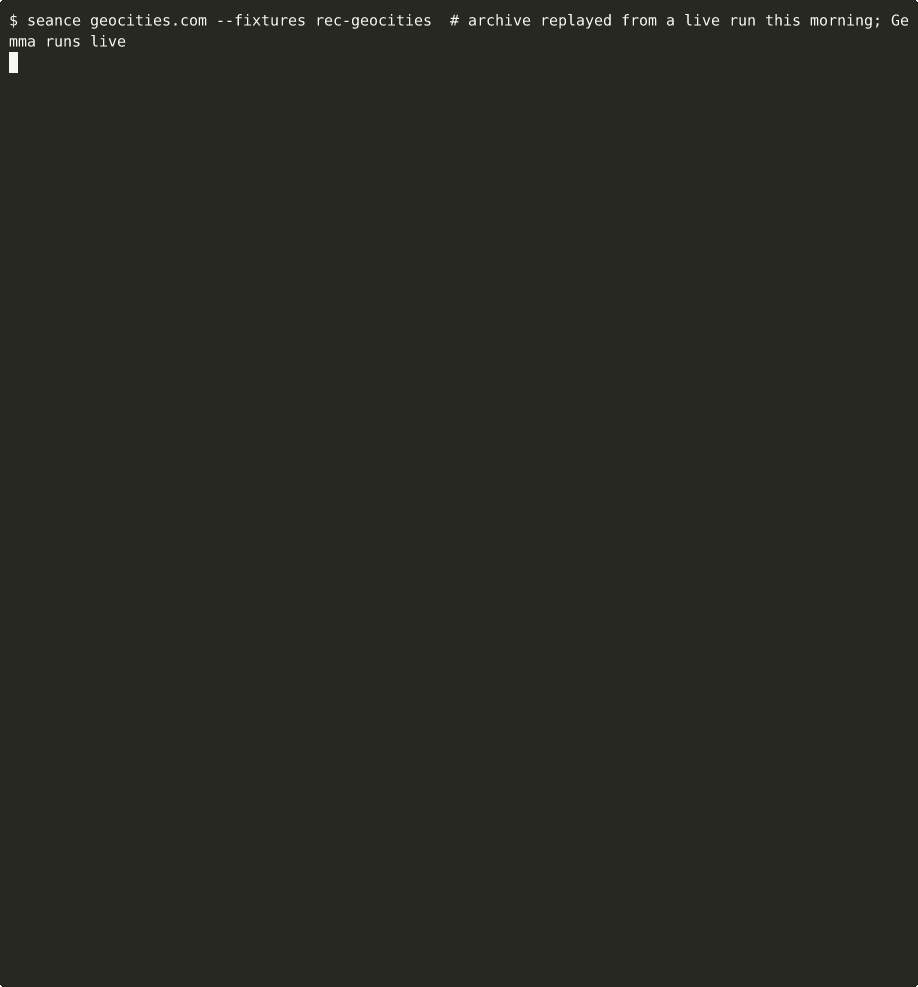

Wayback Séance网 页 招 魂
A small open-weight model, running on a plain CPU, speaks as the ghost of a dead website. It may only remember what the Internet Archive kept: every sentence cites a real snapshot, and every sentence that doesn't match its snapshot is struck through by the medium.
geocities.com
1996 – 2007
Free home pages, neighborhoods, and the long Yahoo! years.
del.icio.us
2003 – 2025
Social bookmarking, many owners, and a strange afterlife.
vine.co
2012 – 2019
Six-second loops, then an archive of itself.
geocities.com
中文 · 1996 – 2007
同一个幽灵，用中文讲述，引用英文原文。

Summon one yourself
pip install git+https://github.com/ziwenqingshu/wayback-seance
llama-server -hf unsloth/gemma-3-4b-it-GGUF:Q4_0 --port 8080 -c 4096
seance geocities.com # or --lang zhNo API keys, no cloud. Code, tests and how the grounding check works: github.com/ziwenqingshu/wayback-seance.